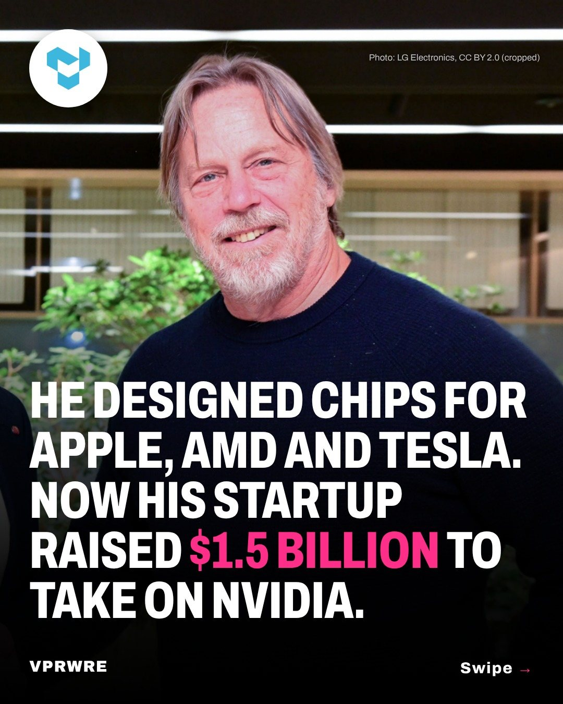

Funding
He designed chips for Apple, AMD and Tesla. Now his startup raised $1.5 billion to take on Nvidia.
Swipe to see why the engineer who designed chips for Apple, AMD and Tesla just raised $1.5 billion.

Tenstorrent, the AI chip company led by CEO Jim Keller, closed a $1.5 billion Series E at a $6.2 billion post-money valuation, more than double what it was worth in late 2024. Trace Capital and Innovation X led the round, with Fidelity, T. Rowe Price, ARK Invest, Morgan Stanley, Sandisk and others joining.
Tenstorrent builds AI processors and computers on the open RISC-V chip architecture, from desktop cards to its Galaxy servers, and licenses its chip designs to companies including Samsung and LG. It says the money will put Galaxy servers to work at scale, running open-weight AI models and video generation.
“We built one architecture and sell it at every size,” Keller said. “The future of compute is open, scalable, and owned by the people building on it.”
In May, Bloomberg reported that Intel and Qualcomm had held early takeover talks with the company. Keller told Bloomberg it decided to stay independent and raise more money instead.
Jim Keller photo: LG Electronics, CC BY 2.0 (cropped)
The carousel
4 slides · Open on Instagram
Disclosure: VPRWRE drafts with Claude, Anthropic’s AI.